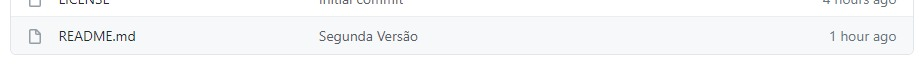

Síntese sobre Softwares de Versionamento (RDE 06)
Atalhos
O que é?
É um sistema que tem por objetivo realizar o controle de versões de um código, documentos ou de qualquer outro tipo de arquivo e pode ser utilizado por um desenvolvimento ou por uma equipe de desenvolvedores.
Geralmente quando vamos desenvolver um projeto ou realizar uma atividade, geralmente criamos uma pasta e dentro da mesma, colocamos o(s) devido(s) arquivo(s) e/ou documento(s), como podemos reparar na ilustração abaixo.
Caso, por exemplo, se trate de uma atividade na qual seja necessário entregar um software, pode-se ter a necessidade de realizar algumas correções ou até mesmo, realizar alguma atualização no(s) arquivo(s), como o incremento de novas funcionalidades no mesmo. Sendo assim, gera uma segunda versão que é um aprimoramento da primeira.
Porém, se o software for de um projeto como para um TCC ou até mesmo for uma aplicação pronta, o arquivo pode vir a passar por constantes atualizações, resultando sempre em novas versões e consequentes novos arquivos

E pode ser que isso se estenda por mais inumeras vezes, resultando em inumeras versões. Dessa forma é muito complicado manter um controle e gerenciar de forma fácil e prática todas essas versões.
Com isso, entram em cena, os SOFTWARES DE VERSIONAMENTO que, através de um REPOSITÓRIO LOCAL , farão todo o gerenciamento através do Histórico de Versões .
Dessa forma, o projeto agora estará versionado, ou seja, em cada arquivo constarão todas as alterações que o mesmo passou.
Porém, quanto o projeto é desenvolvido por uma equipe de pessoas ou de programadores, o Repositório Local acaba não sendo muito util. Dessa forma, tem-se os REPOSITÓRIO REMOTOS , onde, o desenvolvedor ou a equipe de desenvolvedores terá um servidor específico para trabalhar e gerenciar o repositório, fazendo uso de um Software de Versionamento, que vai gerenciar tanto o Repositório Local, como o Repositório Remoto, fazendo com que todos os arquivos que estiveres em um dos repositórios, estejam também no outro e vice-versa.

No conjunto, o Repósito Local e o Repósito Remoto trabalharia mais ou menos da forma que ilustra a figura abaixo:

É muito complicado realizar o gerenciamento de versões de um arquivo. Porém, é ainda mais complicado e complexo quando se trata de mais de uma máquina trabalhando no mesmo repositório. Assim, caso não haja o uso de um Software de Versionamento e se trate de um projeto que trabalhe com o acesso dos usuários aos arquivos, a chance de algum arquivo ser modificado ou excluido indevidamente é muito alta
Analise a situação disposta a seguir:

Nela, notamos a presença de dois usuários: o A e o B , onde ambos trabalham no mesmo projeto porém cada um deles possui o seu Repositório Local.
Ambos os usuários, têm ciencia das alterações que estão sendo realizadas porque o Software realiza esse controle de versão
No entanto, quando os usuários forem sincronizar, o Software irá controlar as ações, isto é, ele vai gerenciar quais ações dos usuários podem ser realizadas ou não e vai notificar, inclusive, caso as ações não sejam de fato realizadas no Repositório Remoto.
A partir da sincronização dos Repositórios Locais, cria-se uma Versão Corrente que vai se distribuida para os usuários, que têm ciencia das alterações que form feitas.
Assim, fica muito mais fácil e produtivo trabalhar em projetos em equipe utilizando-se dos Softwares de Versionamento. Além de eliminar possíveis desencontros, de alguém acidentalmente apagar um arquivo ou alterar algo indevidamente.
Tipos de Software de Controle de Versão
| CENTRALIZADO | DISTRIBUÍDO |
| Possui um repositório central em um servidor com controle de versões | Possui um repositório local com o controle de versões. Ou seja, o usuário pode trabalhar localmente e apenas fazer a atualização apenas quando concluir. |
| Atualizações no Repositório Central (ou Repositório Remoto) | |
| Dependente do servidor: se o servidor parar, todo o projeto que está sendo desenvolvido também para! | Independente do servidor: se o servidor parar, todo o projeto que está sendo desenvolvido também para! |
| Exemplo de software: Subversion | Exemplo de softwares: Mercurial e Git |
GIT
É um software livre de versionamento que surgiu para o desenvolvimento do Kernel do Linux, foi projetado e desenvolvido por Linus Torvallds, em 2005
Cada diretório de trabalho do Git é um repositório com um histórico completo e habilidade total de acompanhamento das revisões, não dependente de acesso a uma rede ou a um servidor central.
I'm an egotistical bastard, and I name all my projects after myself. First Linux, now git.
Sou um bastardo egoísta, e dou o meu nome a todos os meus projectos. Primeiro o Linux, agora o git.
GIT HUB
- Plataforma de hospedagem de código-fonte e arquivos com controle de versão
- Surgiu em 2008 e foi adquirido em 2018 pela Microsoft, por US$ 7,5 bilhões
- ≈ 100 milhões de projetos
- ≈ 56 milhões de usuários
- OctoCat, mascote do Git Hub:
Preparando o ambiente
GIT
GitHub Desktop
Visual Studio Code

Git Hub
Observação:
Quando for realizar a instalação do GIT, marque a seguinte opção para que haja a intregação entre o Visual Studio Code e as demais ferramentas que serão utilizadas:
Use Visual Studio Code as Git's default editor
Com tudo instalado e devidamente configurado, vamos manipular o GitHub!
Como criar um repositório no Git Hub!
O primeiro passo vai ser criar um novo repositório. Para isso, clicamos em File, no menu superior e em seguida em New Repository... ou então, podemos usar o comando de atalho "CTRL + N"
Após isso, damos um nome e uma descrição para o nosso repositório.
Iremos selecionar a opção Initialize this repository with a README
Podemos ainda, escolher entre diversas licenças. Porém, para o curso da disciplina, determinaremos a licença MIT Lincense, que basicamente, ao ser enviado ao repositório remoto, tornará o repositório como público

Com isso pronto, podemos clicar em Create Repository
Note que, automaticamente, alguns arquivos foram criados no diretório especificado no momento da criação do Repositório.
Até o momento, os arquivos criados estão salvos no Repositório LOCAL! Ou seja, não foram publicados ainda!
Para publicar o Repositório, clica em Publish Repository ou então acessa pelo atalho pressionando as teclas "CTRL + P"
Feito isso, desmarque a opção Keep this code private e clique em Publish Repository
Após o carregamento da tela, vamos acessar o nosso servidor na web, através do site do https://github.com/.
Note que, na parte inferior da imagem, é exibido o arquivo README, que foi o arquivo que haviamos marcado no processo de criação do repositório. Bom, vamos trabalhar com ele muito em breve.
Comandos GIT
| commit | torna permanente um conjunto de alterações em um repositório |
| push | envia as alterações para o servidor do repositório remoto |
| fetch | verifica se o repositório local está sincronizado com o repositório remoto |
| pull | sincroniza o repositório local com o repositório remoto, atualizando as versões |
Manipulando um Repositório do Git Hub!
A partir da tela inicial do Git Hub Desktop, clique em Open in Visual Studio Code ou então assione as teclas CTRL + SHIF + A
A exibição ficará da seguinte forma:
A partir disso, vamos acessar o arquivo README.md, que inicialmente está assim:
Agora, vamos realizar uma alteração neste texto adicionando a frase: "Realizando o primeiro commit" e depois salvar esse arquivo
Essa alteração, está salva apenas no Repositório LOCAL!
Ao retornar para o Git Hub Desktop, observe como fica a interface:
Observe que o software lista as alterações que realizamos, no caso, adicionando a 3ª linha (note o sinal de "+" no início da linha) e o seu respectivo conteúdo
Para colocar essa atualização do repositório remoto, vamos realizar um commit. Para isso, vamos utilizar o espaço do canto inferior esquerdo para fazer isso:

Agora, no primeiro e menor campo, preenchemos com o nome da atualização. Neste caso, preencherei como "Primeira Versão". No segundo e maior campo, pode-se preencher com uma descrição dessa atualização que, neste caso, vou deixar em branco mesmo. Após isso, é só clicar em Commit to main
Para finalizar, só falta sincronizar os repositórios local e remoto, clicando em Push Origin ou então usando-se do atalho CTRL + Pe, após isso, o repositório remoto estará devidamente atualizado.
Agora vamos observar como ficou isso na prática, lá no site do Git Hub:
Adicionarei mais uma linha dizendo "Realizando o segundo commit" e continuarei a partir dele.
Retornando ao Git Hub Desktop, no canto superior esquerdo temos a opção de ver o histórico de alterações!
E agora, é possível observar todo o histórico de versões que foram realizadas no arquivo
Versões
- Initial commit
- Primeira Versão
- Segunda Versão


Uma grande vantagem de utilizar um software de versionamento, é a possibilidade de mexer em um mesmo arquivo a partir de maquinas diferentes. Sendo assim, caso uma alteração seja realizada de uma máquina diferente, é necessário dar um fetch para que os arquivos modificados sejam atualizados na outra máquina e assim, tudo fique sincronizado.
É possível também, realizar um commit dentro do próprio Git Hub no site. Para isso, vamos acessar o arquivo, dando um clique sobre ele:

Acessamos o modo de edição, clicando no lápis:
Assim, temos a tela de edição:
No primeiro campo, vamos realiar as nossas atualizações:
E efetuamos o processo, nomeado de Terceira Versão:
O arquivo já está pronto para a visualização no Repositório Remoto!
Porém, no repositório local, ele não foi atualizado. Sendo assim, vamos dar um fetch.
Note que apareceu uma mensagem em destaque que diz que foram feitas alterações diretamente no Git Hub e que os repositórios não estão sincronizados. Portanto, clique em Pull Origin ou então use as teclas de atalho CTRL + SHIFT + P e as alterações serão realizadas nos arquivos que estão na sua máquina. Assim sendo, ambos os repositórios voltarão a estar sincronizados.
Clonando um Repositório
Para clonarmos um repositório, vamos acessar o seu perfil no Git Hub na internet e criar um segundo repositórios seguindo os seguintes passos:
- Acessar a aba de repositórios
- Clica em new
- Criamos e configuramos o nosso Segundo Repositório
- O Segundo Repositório foi criado
Agora dentro do Git Hub Desktop, realizamos um fetch. Note que não aconteceu nada!
Mas, para clonar o seu repositório (se aplica a repositórios de outros usuários também), acessa o menu do canto superior esquerdo que está escrito Current Repository, depois em Add e em seguida em Clone Repository
Na tela que aparecerá, selecione o segundoRepositorio e depois finalize clicando em Clone
Pronto!, agora o repositório já pode ser utilizado e manipulado localmente.
Projetos Pré-Existentes
Geralmente, desenvolvemos nossos projetos em pastas. Mas, isso não significa que são repositórios locais, visto que, o Git Hub não possui controle sobre elas. Então, para isso, vamos criar um novo repositório que se chamará DesenvWeb da seguinte forma
:Agora, vamos colocar os arquivos do projeto dentro dessa pasta que foi criada:
Ao retornar ao Git Hub Desktop, note que o próprio software já realizou uma varredura no repositório local e listou todas as alterações de arquivos que foram realizadas. Observe:
Observe que na barra lateral, temos a listagem de todos os repositórios. E além disso: note que esse repositório ficou separado dos demais numa aba Others. Isso se dá, porque a divisão separa os Repositórios Remotos, acima, dos Repositórios Locais, abaixo.
Para publicar, é muito simples! Basta realizar um Publish Repository
.Ah, só não esqueça de dar um commit antes ^^
Links
- Repositório primeiroRepositório: https://github.com/emanuel18-iec/PrimeiroRepositorio
- Repositório segundoRepositório: https://github.com/emanuel18-iec/secundoRepositorio
- Repositório desenWeb: https://github.com/emanuel18-iec/DesenWeb
Sobre o Desenvolvedor:
Aluno: Gabriel Emanuel - 3° Info Manhã
Professor e Orientador: Francis Baranoski
Vídeo Aula - Softwares de Versionamento
Instituto Federal do Paraná - Campus Irati
R. Pedro Koppe, 100 - Vila Sao Joao, Irati - PR, 84507-302